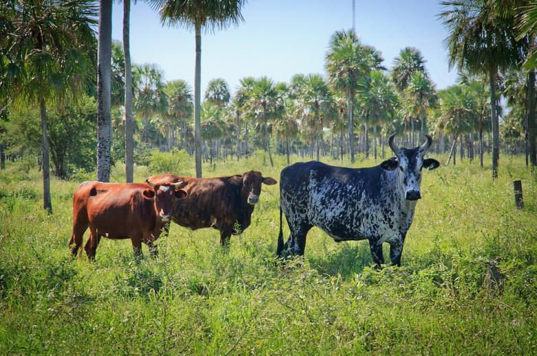
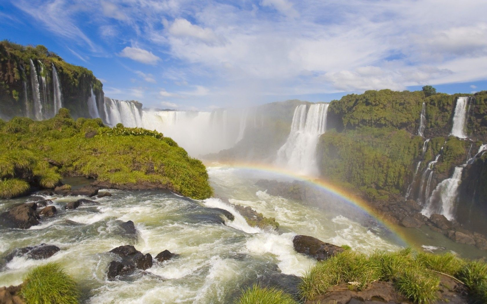
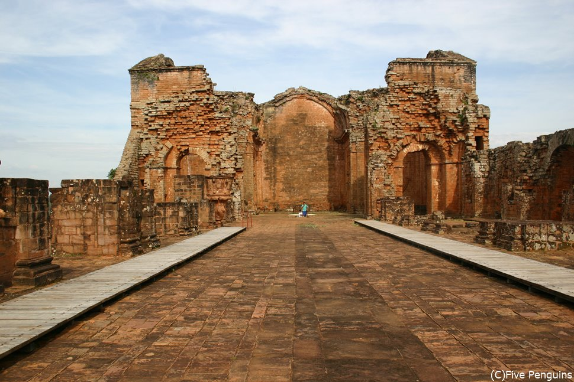

パラグアイ
南アメリカ大陸の内陸国
【年間平均気温】：17～24.5
春（9月～10月）と秋（4月～5月）は早朝と日中の温度差が20℃を超え、1日の中に四季がある
パラグアイの地形は、主要な川であるリオパラグアイの東にある草が茂った平野と低い樹木が茂った丘で構成され、川の西にあるチャコ地域は低湿地の平野で構成されている。川から遠く離れた場所では、乾燥した森林、スクラブ、ジャングルが景観を支配している。リオパラグアイとリオパラナの間にある東パラグアイは標高が高く、国の人口のほとんどが集まっている場所である。
川、木、そして鉄、金、マグネシウム、石灰岩などの鉱物
→環境問題である森林破壊につながる
パラグアイの生物多様性はその多様な生態系のおかげで決定されている。この国には、約10万種の無脊椎動物、1336種の脊椎動物、2万種の植物、250種の魚、150種の爬虫類、および645〜685種の鳥が存在すると推定されている（CBD、2015）。.
パラグアイでは水力発電で国内の電力需要を100％まかなうことができ、余剰の電力はブラジルに輸出されている。電力の輸出は全輸出額の4分の1を占め、国家の主要な財源となっている。
外交は中南米との関係を重視し、1995年に発足した南米南部共同市場の創設メンバーである。経済はブラジルとアルゼンチンに依存しているが、近年は中国からの輸入が急増し、輸入額では中国がトップである。一方で、南米で唯一台湾との外交関係を維持している。 また、農牧畜産業が主産業で、とくに大豆の生産量が世界的に多いことで知られているそうだ。。
「トリニダー遺跡」は、大きく分けて大聖堂・学校・工房・住居・墓地・広場などに分かれておりますが、中でも中央正面に位置する煉瓦づくりの「大聖堂」は圧巻。その規模の大きさと今も残る数多くの緻密な彫刻には、目を見張るものがある。また、ここはロバート・デニーロが主演を務めた１９８６年公開のアカデミー賞受賞映画「ザ・ミッション」の舞台としても有名だそうだ。
「ヘスス遺跡」は、スペインからやってきた建築家の指導のもと建てられただけあって、すっきりと洗練された印象が強い。しかし、実はこの教会、未完成であり、完成前の1767年に、イエズス会退去令が発令されてしまい、作り途中のまま今に至るのだとか。
モンダウの滝はパラグアイ東部にある、落差40メートルの滝で、パラグアイの大自然を思う存分満喫できる迫力満点のスポットである。

1.貧困をなくそう 2.飢餓をゼロに 3.すべての人に健康と福祉を 4.質の高い教育をみんなに 5.ジェンダー平等を実現しよう 6.安全なといれを世界中に 8.働きがいも経済成長も 10.人や国の不平等をなくそう 12.つくる責任つかう責任 17.パートナーシップで目標を達成しよう
1.パラグアイスラム女性を対象にした就業支援・所得創出のためのワークショップ
2.新型コロナウイルスにかかるパラグアイ農村地域・スラム地域における緊急食糧支援事業所
3.日本国内における福祉事業
4.パラグアイ農村部における学校建設事業 パラグアイ農村部・スラムにおける奨学金/奨学品事業
5.JICA草の根技術協力事業
6.パラグアイ農村部における貯水施設とエコトイレに関する事業
8.10.12.パラグアイ伝統工芸品「ニャンドゥティ」フェアトレード事業
17.省略